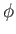
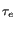
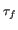
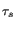

Next: The original model-free gradient Up: Model-free analysis Previous: Model-free analysis Contents Index
In the original model-free analysis of Lipari and Szabo (1982a) the correlation function C( ) of the XH bond vector is approximated by decoupling the internal fluctuations of the bond vector
CI(
) of the XH bond vector is approximated by decoupling the internal fluctuations of the bond vector
CI( ) from the correlation function of the overall Brownian rotational diffusion
CO(
) from the correlation function of the overall Brownian rotational diffusion
CO( ) by the equation
) by the equation
| C() = CO() . CI(). | (14.57) |
The overall correlation functions of the diffusion of a sphere, spheroid, and ellipsoid are presented respectively in section 14.9.1 on page ![[*]](crossref.png) , section 14.10.1 on page , and section 14.11.1 on page .
These three different equations can be combined into one generic correlation function which is independent of the type of diffusion.
This generic correlation function is
, section 14.10.1 on page , and section 14.11.1 on page .
These three different equations can be combined into one generic correlation function which is independent of the type of diffusion.
This generic correlation function is
| CO() = |
(14.58) |
where ci are the weights and  are correlation times of the exponential terms.
In the original model-free analysis of Lipari and Szabo (1982b,a) the internal motions are modelled by the correlation function
are correlation times of the exponential terms.
In the original model-free analysis of Lipari and Szabo (1982b,a) the internal motions are modelled by the correlation function
| CI() = S2 + (1 - S2)e-/, | (14.59) |
where S2 is the generalised Lipari and Szabo order parameter which is related to the amplitude of the motion and  is the effective correlation time which is an indicator of the timescale of the motion, albeit being dependent on the value of the order parameter.
The order parameter ranges from one for complete rigidity to zero for unrestricted motions.
Model-free theory was extended by Clore et al. (1990) to include motions on two timescales by the correlation function
is the effective correlation time which is an indicator of the timescale of the motion, albeit being dependent on the value of the order parameter.
The order parameter ranges from one for complete rigidity to zero for unrestricted motions.
Model-free theory was extended by Clore et al. (1990) to include motions on two timescales by the correlation function
| CI() = S2 + (1 - S2f)e-/ + (S2f - S2)e-/, | (14.60) |
where the faster of the motions is defined by the order parameter S2f and the correlation time  , the slower by the parameters S2s and
, the slower by the parameters S2s and  , and the two order parameter are related by the equation
S2 = S2f . S2s.
, and the two order parameter are related by the equation
S2 = S2f . S2s.
The relaxation equations of Abragam (1961) are composed of a sum of power spectral density functions J( ) at five frequencies.
The spectral density function is related to the correlation function as the two are a Fourier pair.
Applying the Fourier transform to the correlation function composed of the generic diffusion equation and the original model-free correlation function results in the equation
) at five frequencies.
The spectral density function is related to the correlation function as the two are a Fourier pair.
Applying the Fourier transform to the correlation function composed of the generic diffusion equation and the original model-free correlation function results in the equation
The Fourier transform using the extended model-free correlation function is
 +
+